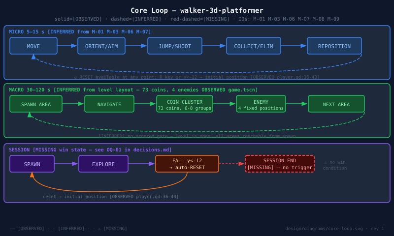
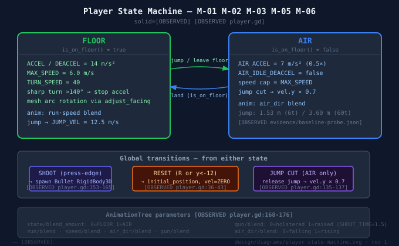
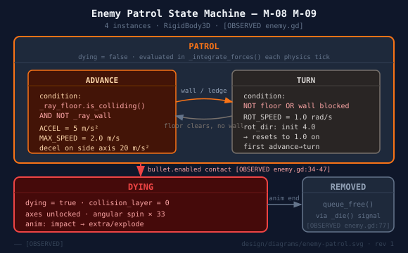
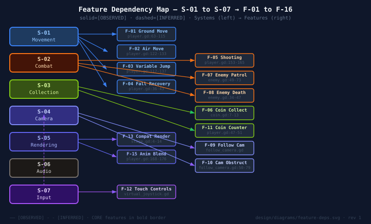

| ID | Goal | Evidence |
|---|---|---|
| PX-01 | Feel the weight of a grounded character | ACCEL=14, gravity=22, sharp-turn stop, air factor=0.5 |
| PX-02 | Read 3D space through a camera that works for you | 3-ray autoturn, obstruction pull, height clamp |
| PX-03 | Control jump height deliberately | JUMP_VEL=12.5; cut×0.7; 1.53m/3.60m measured |
| PX-04 | Follow coin clusters as breadcrumbs through space | 73 coins in 6-8 clusters [OBSERVED game.tscn] |
| PX-05 | Eliminate a patrol enemy with one well-timed shot | One-hit kill via bullet.enabled contact [OBSERVED] |


| ID | World position (approx) |
|---|---|
| Enemy1 | (2.3, -0.6, -6.0) near start |
| Enemy2 | (48.1, -0.6, 5.1) mid-level |
| Enemy3 | (48.0, 0.7, 17.8) far cluster |
| Enemy4 | (36.7, -0.6, 15.7) return path |

| ID | Feature | Priority | Status |
|---|---|---|---|
| F-01 | Camera-relative ground movement | CORE | OBSERVED |
| F-03 | Variable-height jump | CORE | OBSERVED |
| F-05 | Press-edge shooting (bullet) | CORE | OBSERVED |
| F-06 | Coin collection (Area3D) | CORE | OBSERVED |
| F-07/08 | Enemy patrol + death | CORE | OBSERVED |
| F-09/10 | Follow camera + obstruction | CORE | OBSERVED |
| F-12 | Touch controls (virtual joystick) | IMPORTANT | OBSERVED (hw unverified) |
| F-16 | Secret area (Label3D) | NICE-TO-HAVE | OBSERVED |
| ID | Risk | Category | Status | Mitigation |
|---|---|---|---|---|
| R-01 | No win state — player has no session goal | Design | Certain / absent | Define + implement before film narration — OQ-01 |
| R-02 | 73 coins, no total display or completion event | Design | Certain / absent | Add "X/73" UI or document as cosmetic — OQ-05 |
| R-03 | Enemies pose no threat to player | Design | Certain / absent | Add contact damage or reframe as obstacles — OQ-04 |
| R-04 | Touch hardware unverified | Technical | Unknown | Verify on device or label synthetic-test-only — OQ-10 |
| R-05 | 7 Texture RID shutdown leaks | Technical | Known / persistent | Investigate root cause before production |
| R-06 | PCM audio peaks at 0 dBFS | Technical | Known / measured | Apply -2.5 dB gain candidate; listen and confirm |
| # | Question | Stakes |
|---|---|---|
| OQ-01 | What is the session goal? No win state, no level-complete, no score goal. | Film cannot describe what success looks like |
| OQ-02 | Who is the target player? Student, game-jam player, or film viewer? | Determines scope, polish, and narration frame |
| OQ-03 | What are the design pillars? Nothing in source declares them. | No rejection criterion for future design changes |
| OQ-04 | Can the player be harmed by enemies? Currently no. | Removes all tension from the combat mechanic |
| OQ-05 | Is 73-coin collection completable? No total shown; no trigger fires. | Completion is invisible to the player |
| OQ-06 | Is there a narrative? Only world text: "You have found a secret area!" | Film has nothing to frame beyond mechanic demonstration |